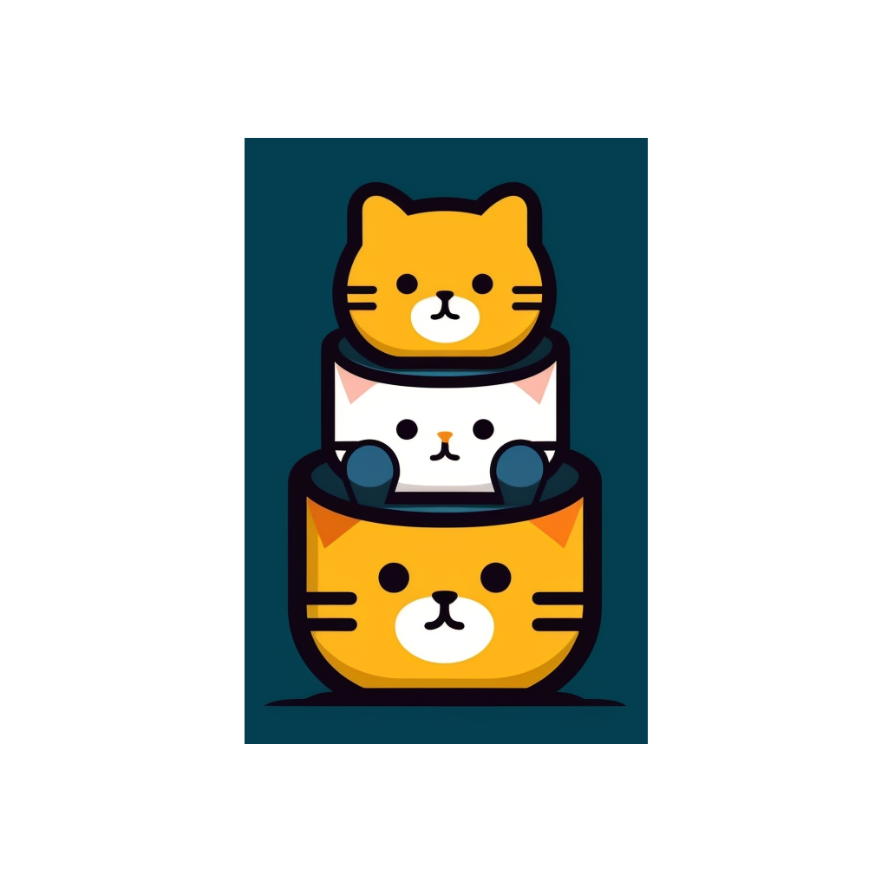
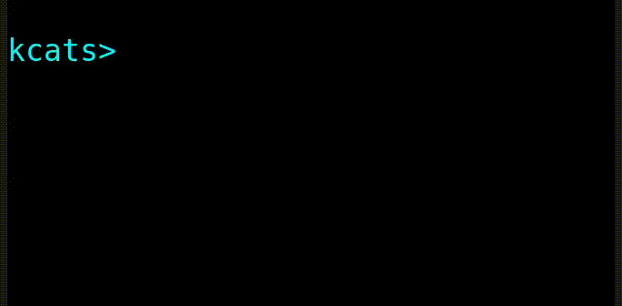

The kcats Programming Language
Table of Contents
- 1. Summary
- 2. Examples
- 3. Benefits
- 4. Getting Started
- 5. Fundamentals
- 5.1. Key terminology
- 5.2. The stack
- 5.3. Exploring
- 5.4. Data types
- 5.5. Stack motion
- 5.6. Cloning and dropping
- 5.7. Programs that write programs
- 5.8. Looping and branching
- 5.9. Argument order
- 5.10. Item hiding
- 5.11. Stack effect control
- 5.12. 'down' and 'deep' variants
- 5.13. Promotion
- 5.14. Error handling
- 5.15. Your own words
- 5.16. Generators
- 5.17. Coordination and Input/Output
- 5.18. Debugging
- 6. More Examples
- 7. Contributing
- 8. FAQ
- 9. Issues
- 9.1. DONE Build without using emacs interactively
- 9.2. DONE Remove platform interop from lexicon
- 9.3. DONE 'unassign' doesn't take a keylist, only a single key
- 9.4. DONE More support for nested/related envs
- 9.5. TODO Graphical environment browser/editor
- 9.6. TODO Code distribution method
- 9.7. DONE Clean up all the vector conversion
- 9.8. DONE org-babel-execute for kcats
- 9.9. INPROGRESS At least one example for each word in lexicon
- 9.10. INPROGRESS Prime number sieve example
- 9.11. TODO FAQ entry about composability
- 10. Acknowledgements
- 11. Roadmap Notes
 
1. Summary
A simple, powerful, beginner-friendly programming language.
2. Examples
2.1. Produce fibonacci sequence
Here we show a local word definition fibonacci which accepts a
number n (how many items in the sequence to produce) and produces a
list (the sequence).
Then we call the word with n = 20.
[[fibonacci [[1 0 [[+] shielddown swap clone] [float] dip swap taker collect] shielddown]]] [20 fibonacci] let
[1 1 2 3 5 8 13 21 34 55 89 144 233 377 610 987 1597 2584 4181 6765]
2.2. Sequence operations
Find highest priced of all products rated 4.5 or higher, and in stock
[[[[name "Mouse"] [price 50] [rating 4.4] [inStock yes]] [[name "Laptop"] [price 1000] [rating 4.7] [inStock yes]] [[name "Desktop"] [price 1500] [rating 4.9] [inStock []]] [[name "Tungsten Cube"] [price 2500] [rating 3.4] [inStock yes]] [[name "Keyboard"] [price 70] [rating 4.8] [inStock []]] [[name "Monitor"] [price 200] [rating 4.5] [inStock yes]] [[name "Camera"] [price 600] [rating 4.3] [inStock yes]]] ;; make a generator [take] ;; keep only rating >= 4.5 AND inStock [[[[rating] lookup 4.5 >=] [[inStock] lookup]] [execute] every?] keep ;; find the remaining product with highest price [[pair [[price] lookup] map unwrap >] [] [swap] if drop] reduce] shield
[[name "Laptop"] [price 1000] [rating 4.7] [inStock yes]]
3. Benefits
3.1. Easy for beginners
Kcats is designed to require learning as few concepts as possible. It's made with:
- Stacks
- Data values (numbers, strings, bytes)
- Lists
- Functions
- Pipes
All of these are combined in various ways to achieve any type of expression, the same way a few types of lego bricks can be combined to make any object.1
Kcats code is just english words, quotation marks, [ and ]. No other
symbols. 2
Format code however you want, kcats doesn't care.
Interactive development is encouraged. The documentation for the standard library can be queried with the language itself. See 5.3.
3.2. Powerful
Kcats' metaprogramming (programs that write programs) facilities allow you to express yourself succinctly and without repetition.
3.3. Excels in the small
There is zero ceremony. A program can easily be a single line consisting of a few words:
"contacts.txt" slurp read [[age] lookup 55 >=] filter
That reads a database file of contacts, and prints only those contacts at least 55 years old. The program is 8 words.
You don't need a "main" method, or class declaration or any other boilerplate. You only need to specify what the program is actually supposed to do.
3.4. Features
[X]Automatic memory management[X]Multithreading[X]Error handling[X]Metaprogramming[X]Channels/CSPs[X]Introspection[X]Filesystem I/O[X]TCP/IP Socket I/O[X]Generators[X]Sequence library[X]Cryptographic primitives[X]Builtin debugging tools[X]Serialization
3.5. Tradeoffs
Kcats is meant to handle personal automation tasks, where expressivity and simplicity matter far more than raw performance. It's not currently suitable for processing huge datasets or high performance number crunching, and likely never will be.
4. Getting Started
4.1. Builds
4.1.1. Download pre-built binaries
See Releases. Binaries currently do not have installers, you will need
to place the executable in a convenient place and chmod it (on mac/linux).
4.1.2. Build from source
You can skip this section if you're using pre-built binaries described above.
4.1.2.1. Dependencies
- emacs
- rustc
- cargo
4.1.2.2. Creating the source
The source is contained within these org files, along with annotations and other non-code information. To generate the source code (that the runtime or compiler needs as separate files) before running or building, run the following command:
emacs --batch --load org --load tangle.el
4.1.2.3. Building
See Building
4.2. Using
See Using
4.3. Developing
4.3.1. Browsing the source
It can be checked out from git or viewed here: Production Source
4.3.2. Emacs IDE
See emacs-ide.org in the source tree for more info.
5. Fundamentals
5.1. Key terminology
- item
- A value. Includes numbers, strings, byte arrays, words,
characters, and lists. (examples:
5,"Bob",swap,[1 2 3]) - list
- An item that contains other items, in a particular order
(example:
[a "foo" 2]). - program
- a list of instructions intended to be carried out by a
machine. (example:
[[odd?] filter]). - stack
- A list with a first-in, first-out interface. This is where the program stores all the data it needs to manipulate.
- word
- causes the program to do something, usually taking some
items from the top of the stack, and using them to create new
stack items. (examples:
swap,+,dip) - axiom word
- A word not defined in terms of other words.
- definition
- what a word is supposed to do, represented either in the base language for axiom words, or as a program.
- dictionary
- a list of available words and their definitions.
- environment
- the entire state of an executing program, which generally includes a stack, program, and dictionary.
- pipe
- A conduit to communicate between environments, and to the outside world. Items are put into pipes and emerge somewhere else (another environment, a file on disk, a remote machine, etc).
5.2. The stack
Kcats is a stack-based language. That means it uses a stack to keep track of all the values it needs to work with, instead of variables and function parameters. To manipulate data, you put it onto a stack, and then words operate on the items at the top of the stack (which might remove, shuffle, replace, or add new items). If you're familiar with functions in other languages, that's all words are - they're a function of the current stack, and they return a new stack.
Here's a simple example. If we mentally execute the program below, we
first put 1 onto the stack. Then we put 2 onto the stack. 2 is on top
of 1. Then we put the word + onto the stack, where it will consume the 2
and the 1, and leave their sum, 3.
1 2 +
3
Multiple steps are accomplished just by adding more words and
data. For example, in the program below we can add 1 and 2 (leaving 3
on the stack), and then multiply by 5, leaving 15.
1 2 + 5 *
15
Here's how it would look step by step (where the | separates the
program that hasn't run yet - on the right, from the stack on the
left). The stack's top item is just to the left of the |.
;; stack | remaining program ;; ------|-------------------- | 1 2 + 5 * 1 | 2 + 5 * 1 2 | + 5 * 3 | 5 * 3 5 | * 15 |
When there is nothing remaining to the right of the |, the program
is finished. The result is what is left on the stack (in this case
15).
Note the stack can end up with multiple items. When it's printed, it will always start with the top of the stack - the last thing in is the first thing out.
1 2 3
3 2 1
Lists are denoted with square brackets, like [1 2 3]. When
encountered, they just go onto the stack as a single unit. Words can
operate on lists once the list is on the stack. You can see below the
word join combines two lists.
[1 2 3] [4 5] join
[1 2 3 4 5]
5.3. Exploring
5.3.1. Overview
Now that we know the very basics, we can explore and learn as we go. Kcats lets you treat the standard library (the dictionary) as data, and you can process it with… itself. Documentation is in there. You just need to know how to ask for it. So here's how you do it, and you'll understand how exactly it works later.
In all the examples in this document, you can run them on the command
line, by running kcats -p, followed by the program in single quotes, like this:
kats -p 'dictionary [first] map [] sort'
In case you want to view it in its entirety, the standard library is part of the source, it lives in the lexicon file.
5.3.2. What words or functions are available?
This program retrieves the dictionary of the starting environment, and prints just the name of each, sorted in alphabetical order.
dictionary [first] map [] sort
[* + - / < <= = > >= abs addmethod advance and animate any? assert assign association association? attend autoformat bail both both? branch break breakpoint bytes bytes? capture ceil clone close collect compare contains? count cram cut days dec decide decorate decorated delegated dictionary dip dipdeep dipdown dive divedeep divedown drop dropdeep dropdown dropper dump each emit empty empty? ends? environment error? eval-step evaluate even? evert every? execute fail file-in file-out filter first flip float fold functional future generate generator get group handle handoff hash hours if inc indexed inject inspect integers into join joiner keep key last let liberate lingo list? lookup loop map max milliseconds min minutes mod negative? not number? odd? or pair pipe-in pipe-out pipe? pop positive? prepend prime primrec print put quot range read receiver recover recur redefine rem repeat rest restore retry reverse second seconds select sender serversocket set set? shield shielddeep shielddown sign sink siphon sleep slice slurp snapshot socket something? sort sort-indexed spawn spit split sprint sqrt standard starts? step stepper string string? swap swapdown take taker template timer times timestamps toe tos triplet tunnel type unassign until unwrap update value verify when while within? word? wrap xor yes zero? zip]
Even though the rest of this document will explain a lot of these words and how they work, the above program does the following:
dictionary: retrieves the dictionary and puts it on the stack[first] map: for each item in the dictionary (which is a key/value pair, where the key is the word and the value is the definition) take thefirst, which is the word.[] sort: sort takes a program to transform each item in the list it's sorting, to use for comparison. We want to use the word itself for comparison, so we don't need to transform it at all, hence the empty program.
5.3.3. What inputs/outputs does a particular word have?
The specification of a word's input and output types is stored in the
dictionary too. It's in the property called spec. Let's say you're
interested in the word swap.
dictionary [swap spec] lookup
[[[item a] [item b]] [[item b] [item a]]]
What this program does is fetches the dictionary, then looks up the
swap definition, then within that definition, looks up the spec property.
In the result, what we have here is two lists - the spec of the input, and the spec of the output.
The input spec is [[item a] [item b]]. The output spec is [[item b]
[item a]]. What it's telling you is that it requires two items on the
stack, any two, we'll call them a (on top) and b beneath. There may be
more items below that but they won't be touched. When swap is
finished, a and b will have their places swapped so that b is on
top. And in fact that's what we get:
"b" "a" swap
"b" "a"
Remember the top of the stack is printed first, and so b is now on top.
5.3.4. What are some example usages of a word?
dictionary [swap examples] lookup
[[[1 2 3 swap] [1 3 2]]]
This is a list of examples, and each example is a pair:
- A program that calls the given word
- A program that doesn't call the word that gives the same result 3
5.3.5. Continuing exploration
Use the same technique to explore other words. You can simply replace
the word in the code snippets above with some other word. Here's how
you find the examples for =, which tests for equality of two items -
just replaced swap with =.
dictionary [= examples] lookup
[[[1 2 =] [[]]] [[1 1 =] [yes]] [[[] [] =] [yes]] [[[1] [] =] [[]]] [[[1 [[]]] [1 [[]]] =] [yes]] [[[1 ["foo"]] [1 ["foo"]] =] [yes]] [["hi" "hi" =] [yes]] [["hi" "there" =] [[]]] [[[] yes =] [[]]] [[[1 ["foo"]] [1 ["bar"]] =] [[]]] [[[] [] association =] [yes]] [[[[a b]] [[a b]] association =] [[]]]]
5.4. Data types
5.4.1. Types
5.4.1.1. Words
In kcats, words can be in the dictionary or not.
The first type, verbs, are used directly in the execution of programs,
like clone and swap:
1 clone 2 swap
1 2 1
The second type are used inside lists, often as field names. These words can't be executed (you'll get an error if you try), they're used more like you'd use strings or keywords in other programming languages.
[foo bar baz] [quux] unwrap put
[foo bar baz quux]
Note the use of unwrap here. What's wrong with just trying to put
quux directly into the list?
[foo bar baz] quux put
[[type error] [asked [quux]] [reason "word is not defined"] [unwound [quux put]]] [foo bar baz]
The problem is when kcats encounters a word during execution, it checks the dictionary to see what to do. If the word isn't isn't in the dictionary, that's an error. When a word is inside a list, kcats treats the whole list as an item and doesn't look inside the list.
What we want is to get quux onto the stack by itself without actually
executing it. We can do that with [quux] unwrap. The word unwrap does
just what it says, removes the list wrapper and leaves a bare word on
the stack. No error occurs here because the bare word is already on
the stack, it's not part of a program. Another way to go about this is
to use join so we don't need unwrap:
[foo bar baz] [quux] join
[foo bar baz quux]
5.4.1.2. Booleans
Most programming languages have special values true and false. Kcats
does not. In kcats decision making, an empty container is negative
(acts like false), and anything else is affirmative (acts like true).
[] ["yes"] ["no"] branch
"no"
versus
"anything" ["yes"] ["no"] branch
"yes"
But wait, what about this?
3 odd?
yes
Some words will return the word yes, but it's not really a boolean,
it's just the word yes which has no special meaning to kcats other
than that it's an arbitrary affirmative value. For convenience, yes is
in the dictionary, so you do not have to quote it. It evaluates to
itself. There is no word no, since it would need special handling to
be negative when every other word is affirmative. Use empty list [] to
mean no.
5.4.1.3. Numbers
Integers and floats are supported (64 bit).
Supported math operations include +, -, *, /, mod, rem, min, max, abs,
inc, dec, <, >, <=, >=, ceil, sqrt, odd?, even?.
5.4.1.4. Containers
- Overview
Containers are types that contain other items. Some containers are homogenous, for example strings are a container for characters and if you try to put anything else in it, that's an error. Other containers can hold any kind of item, for example lists and sets.
- Lists
Lists are multiple items bound up into a single unit, where their order is maintained. Lists are heterogenous and can accept any type, including other lists.
- Comprehension
See the word
step, which runs the same program on each item in a list.0 [12 6 13 7 5] [+] step
43
Similar to
step, but more strict, ismap, which only allows the program to work on a given item and can't mess with the rest of the stack. Use that to transform each item in a list, in the same way (in this case showing the remainder when dividing by 5).[12 6 13 7 5] [5 mod] map
[2 1 3 2 0]
- Comprehension
- Strings
Strings are a container for character types, and work much like in other programming languages. Most of the functions that work on other containers will work on strings.
"Hello World!" count
12
"Hello World!" first
\H
"Hello World" 0 5 slice"Hello" - Bytes (byte array)
Byte arrays are a sort of "lowest common denominator" data format. It's what you use to interact with files or sockets. You can get byte literals in base64 encoding:
"Hello World!" bytes#b64 "SGVsbG8gV29ybGQh"and you can treat those byte arrays as lists of integers:
#b64 "SGVsbG8gV29ybGQh" take
72 #b64 "ZWxsbyBXb3JsZCE="72 is the ASCII encoding for
H. - Associations
An association is made from a list of pairs, like this:
[[name "Alice"] [age 24] [favorite-color "brown"]]
However there are some words you can use that make this list behave a bit differently than a normal list. For example:
[[name "Alice"] [age 24] [favorite-color "brown"]] [age] 25 assign
[[age 25] [name "Alice"] [favorite-color "brown"]]
Here we use
assignto reset Alice's age - it does not simply add a new item to the list. It will find the existing key and replace it. It will create a new item only if the key didn't already exist:[[name "Alice"] [age 24] [favorite-color "brown"]] [department] "Sales" assign
[[name "Alice"] [favorite-color "brown"] [age 24] [department "Sales"]]
Notice that the order of the items is not preserved. Once you treat a list as an association, it "sticks" (see 5.13 for details). It acts like an association from then on, and order is no longer guaranteed to be maintained.
We can improve upon our example that incremented Alice's age (presumably after her birthday) with the word
update. That will run a program on the item of whatever key (or keys) you specify.[[name "Alice"] [age 24] [favorite-color "brown"]] [age] [inc] update
[[age 25] [name "Alice"] [favorite-color "brown"]]
Note that associations and lists look the same when printed, but testing them for equality will reveal they are not the same:
[[name "Alice"] [age 24] [favorite-color "brown"]] [age] [inc] update [[name "Alice"] [age 25] [favorite-color "brown"]] =
[]Here we are comparing an association with a list. The
=operator has no way of knowing whether you want the list semantics (which does care about order), or the association semantics (which doesn't care about order). It defaults to the more strict rules, so they are not equal.The act of using a list as an association (by applying words to it like
assignorupdate) will convert it to an association, but what if you just want to convert a list to an association, without doing anything else?You can use the word
associationto convert the list to an association:[[name "Alice"] [age 24] [favorite-color "brown"]] [age] [inc] update [[name "Alice"] [age 25] [favorite-color "brown"]] association =
yes
- Sets
Sets are made to test for membership, and do not care about order.
["Larry" "Curly" "Moe"] set "Moe" contains?
yes
If you add an item to a set, but it's already there, nothing changes.
["Larry" "Curly" "Moe"] set "Curly" put
["Larry" "Moe" "Curly"]
You can
takefrom a set but since order doesn't matter, you get an arbitrary item.1 20 1 range set take15 [8 3 18 16 6 13 11 12 4 7 2 10 14 17 19 5 9 1]
5.4.1.5. Errors
See 5.14
5.4.1.6. Pipes
See 5.17
5.4.2. Traits
There are words that operate on multiple types, and it's helpful to talk about what those types have in common. Specs use these traits to describe groups of types that a word will accept or produce.
5.4.2.1. Dispenser
Containers from which you can take out items, one by one. Includes:
- Strings
- Bytes
- Lists
- Associations
- Sets
- Out Pipes
Tunnels
We can query the dictionary to see what words take a
dispenser:
dictionary [second [spec] lookup first set [dispenser] unwrap contains?] filter
[[step [[definition builtin-function] [examples [[[1 [2 3 4] [*] step] [24]] [[1 [] [*] step] [1]]]] [spec [[program dispenser] [*]]]]] [take [[definition builtin-function] [examples [[[["a" "b" "c"] take] [["b" "c"] "a"]] [[[1 2 3] take dropdown] [1]]]] [spec [[dispenser] [item dispenser]]]]]]
5.4.2.2. Receptacle
Containers into which you can put items, one by one. Includes:
- Strings
- Bytes
- Lists
- Associations
- Sets
- In Pipes
- Tunnels
dictionary [second [spec] lookup first set [receptacle] unwrap contains?] filter
[[put [[definition builtin-function] [examples [[[[] 1 put] [[1]]] [[[1 2 3] 4 put] [[1 2 3 4]]] [["foo" bytes 32 put string] ["foo "]]]] [spec [[item receptacle] [receptacle]]]]]]
Supported words:
put
5.4.2.3. Sized
Containers whose items can be counted. Includes:
- Strings
- Bytes
- Lists
- Associations
- Sets
Just list the names of the words that use sized since there's a lot:
dictionary [second [spec] lookup first set [sized] unwrap contains?] filter [first] map [] sort
[get sort-indexed any? assign count environment every? fail filter join lookup map sort]
5.4.2.4. Ordered
Containers whose items are kept in a specific order. Includes
- Strings
- Bytes
- Lists
dictionary [second [spec] lookup first set [ordered] unwrap contains?] filter
[[second [[definition builtin-function] [examples [[[[4 5 6] second] [5]]]] [spec [[ordered] [item]]]]] [first [[definition builtin-function] [examples [[[[4 5 6] first] [4]]]] [spec [[ordered] [item]]]]] [reverse [[definition builtin-function] [examples [[[[1 2 3] reverse] [[3 2 1]]]]] [spec [[ordered] [ordered]]]]] [pop [[definition builtin-function] [examples [[[["a" "b" "c"] pop] [["a" "b"] "c"]] [[[1 2 3] pop dropdown] [3]]]] [spec [[ordered] [item ordered]]]]] [last [[definition builtin-function] [examples [[[[3 4 5 6] last] [6]]]] [spec [[ordered] [item]]]]]]
5.5. Stack motion
Often you have all the data a word needs on the stack, but it's in the wrong order. There's lots of handy words to help there.
- swap
- swap the top two items
- float
- float the 3rd item up to the top
- sink
- sink the top item down to 3rd
- flip
reverse the top 3 items
These words can also be combined with
dipand its variants to reach deeper into the stack.
5.6. Cloning and dropping
When you're done with an item, you can drop it, which eliminates it
from the top of the stack. If you know a word will drop a item you
need afterward, you can clone it.
5.7. Programs that write programs
The most important expressive feature of kcats is that you can manipulate programs exactly the same way as you can any other data.
One thing you can do with a list, is treat it like a program and
execute it. Notice that on the 5th and 6th line of the execution trace
below, the word execute takes the list from the top of the stack on
the left, and puts its contents back on the right, making it part of
the program remaining to be run!
;; stack | remaining program ;; ---------|-------------------- | 4 5 6 [* +] execute inc 4 | 5 6 [* +] execute inc 4 5 | 6 [* +] execute inc 4 5 6 | [* +] execute inc 4 5 6 [* +] | execute inc 4 5 6 | * + inc 4 30 | + inc 34 | inc 35 |
Note that, when * + gets moved back to the program, it went in
front of inc. The program acts just like a stack - the last thing in
is the first thing out.
The same way we used join to combine two lists, we can combine two
small programs into one, and then execute it:
4 5 6 [+] [*] join execute
44
Note that words inside lists don't perform any action when the list is put on the stack. You can think of it as a quotation - a message being being passed along, not acted upon.
5.8. Looping and branching
5.8.1. if
if takes 3 programs from the stack:
conditiona program whose result decides which branch to take- the
yesbranch - the
nobranch
An important detail: after condition runs, its stack effects are
erased. The yes or no branch runs on whatever was underneath the 3
programs at the start.
1 2 3 [odd?] ["it's odd"] ["it's even"] if
"it's odd" 3 2 1
Notice how the 3 is still there. The word odd? normally consumes its
argument.
3 odd?
yes
Here's a more extreme example:
1 2 3 [drop odd?] ["it's odd"] ["it's even"] if
"it's even" 3 2 1
See how we drop the 3 and test odd? against 2 instead? Normally we'd
have consumed both the 3 and the 2 but the conditional is not allowed
to have any stack effect. See 5.11.
5.8.2. loop
Loops take a program to run as the body, and a boolean (See 5.4.1.2)
condition whether to run the body. If the condition is false, the body
never runs. If it's true, the body runs and loop expects another
boolean condition to be on top to see whether to run the body again.
Note that the item on top only determines whether the body runs
again, it's dropped and not accessible to the body program. If the
body needs it, be sure to clone it. Usually it doesn't need that item
for anything except deciding whether to continue the loop, which is
why it's dropped automatically.
Here's an example:
1 yes [2 * clone 100 <] loop
128
Notice that loop receives the body program and yes the first
time. The body program never sees yes, only the 1 underneath it - it
multiplies it by 2, then clones it and checks if it's less
than 100. If so, it drops that boolean value and continues and
multiplies the number beneath by 2 again, and so on, until the number
is greater than or equal to 100. Finally that false value is dropped
and the loop is done, leaving just the final number 128.
5.8.3. while
Kcats also has while, which is a bit higher level than loop. Instead
of expecting a boolean value on top each time through, you provide a
condition program similar to what if requires. while runs the
condition program, if it leaves a affirmative value, the loop
continues. Like loop, while's body does not have access to the
affirmative value.
1 [100 <] [2 *] while
128
Like if, the condition program cannot permanently affect the stack. So
we don't need clone like we did with loop. After we compare the number
to 100, it's restored so the body can see it on top.
5.8.4. until
It's just like while but with the condition's logic reversed, so that
it stops when the condition is true.
1 [100 >=] [2 *] until
128
Unlike while (which runs the body 0 or more times), until will always
run it at least once.
1 [yes] [2 *] until
2
5.9. Argument order
Kcats stack-based nature can take a little getting used to, and the reversing of the order you wrote something is perhaps the biggest stumbling block.
Notice how if is designed to have the
conditional/true/false branch in the order you expect when you write
code. However remember if you print the stack the order will be
reversed - the false program will be on top, followed by the true
program, followed by the conditional:
1 2 3 [drop odd?] ["it's odd"] ["it's even"] ;; if
["it's even"] ["it's odd"] [drop odd?] 3 2 1
This is a common theme in kcats, where argument order is designed to make the code readable - if a word takes multiple arguments, and the order matters, the "first" logical argument is not the top of the stack. Here's an example:
1 2 <
yes
When we write 1 2 < we mean "1 is less than 2". Even though the top
of the stack is 2, we don't consider 2 the "first" argument.
5.10. Item hiding
Sometimes you have a program that you don't trust with a certain stack item. Perhaps there's a password on the stack, and you're running an untrusted program given to you by someone else.
What if there was a way to hide that password behind your back such that the program never even knew it was there, and then restore it after the untrusted program was finished?
dip takes an item on the top of the stack, and a program. It
temporarily hides the item, and runs the program. After the program is
done, it puts the item back on the stack.
1 2 "mypassword" [+] dip
"mypassword" 3
Notice the addition program could not access the password even if it tried. It isn't on the stack while it's executing, it's hidden away elsewhere in the runtime, temporarily.
dip is very common in kcats, and it's used mostly in cases where you
don't actually care if a program reads a item, you just want the
item out of the way temporarily, and it's easier than finicky
swapping. However in cases where there is a trust issue, no amount of
swapping can fix the problem and you definitely should reach for dip.
5.11. Stack effect control
Kcats provides some facilities to let you avoid tedious cloning of items to keep from losing them. Most words consume items from the stack to produce new items. Sometimes you'll still need those old items again later.
We saw earlier how if runs a condition program, and no matter how
badly that program messes with the stack, that effect is wiped clean
and only the top result of that program remains.
That magic is not locked away inside if - you can use it in your own
programs.
Earlier we showed how to examine the dictionary. Here's how you see
the definition of if:
dictionary [if definition] lookup
[[shield] dipdown branch]
if runs the condition program with shield. shield runs the given
program, takes the top item and places it on top of the original stack
(before the program ran). Let's look at the first example of shield -
remember each example shows two programs that produce the same result.
Here's how we view the first example of shield.
dictionary [shield examples] lookup first
[[1 2 3 [=] shield] [1 2 3 []]]
Here we're checking whether 2 and 3 are equal without consuming
anything.
Here's what it would look like without shield:
1 2 3 =
[] 1
The 2 and 3 are consumed, leaving only the empty list to signal the
negative condition.
5.12. 'down' and 'deep' variants
There are words like dipdown, shielddown, swapdown, dropdown,
divedown. What are those?
It's a modification of the original where the effect is one stack element further down from the original. What exactly is further down, depends on the word.
- swapdown
- swap not the top two items, but the 2nd and 3rd items
- dipdown
- hide not the top stack item, but the top two items
- shielddown
- protect not the whole stack, but everything except the top item.
- dropdown
- drops the 2nd item
- divedown
- hides the top two items but then floats the result back to the top above the previously hidden items
Similarly the deep variants are one level even deeper than that:
- swapdeep
- swap the 3rd and 4th items
- dipdeep
- hide the top 3 items
- shielddeep
- protect all but the top two item
- dropdeep
- drops the 3rd item
5.13. Promotion
Data types are automatically converted when needed.
For example, if you have a list of pairs and you use the word lookup,
it assumes your intention is to use the list as an associative data
type, so it will be automatically converted, and remain converted
after lookup completes.
You can tell by the spec when the return type is a promoted type:
dictionary [assign spec] lookup
[[[item value] [list keys] sized] [association]]
Here you can see that the spec for assign takes a sized and returns an
association. This allows you to do things like this:
[[name "Susie"] [age 25]] [sport] "bowling" assign
[[age 25] [name "Susie"] [sport "bowling"]]
The initial value of [[name "Susie"] [age 25]] is not an associative,
it's just a list. You could explicitly convert it using the word
association but assign will do it for you, because it needs an
associative type.
Note that the conversion can fail, because converting to associative
requires that you have a list of pairs. If you don't, that's an error:
["foo" "bar"] [age] 25 assign
[[unwound []] [asked [pair]] [reason "type mismatch"] [type error] [actual "foo"] [handled yes]]
The most common promotion is from list to associative but there are
others.
5.14. Error handling
In kcats, when a program encounters an error, an error item is placed on the stack instead of the usual result.
2 3 "four" * +
[[unwound [* +]] [reason "type mismatch"] [asked [number]] [type error] [actual "four"] [handled yes]] "four" 3 2
Notice the unwound field contains the rest of the program that
remained when the error occurred.
We can fix the problem and continue, but only if we can stop the
unwinding before our entire program is unwound. We can do that using
the word recover, which takes two programs: p and r, p is run and if
it results in an error, the unwinding is limited to p and then r is
run. When r runs, the error item is on the top of stack. If there is no
error, r does not run.
In the program below, we recover by discarding the error and the
string "four", and replacing it with the number 4. Then trying the
operations * + again.
2 3 "four" [* +] [drop drop 4 * +] recover
14
The problem with the usage of recover above is that we had to specify
the arithmetic words * + twice - once in p and again in r in case they
failed the first time. Remember those operations are saved in the
unwound field of the error, and we can access them and even execute
them. There is a word that does this for you: retry: it takes an error
on the top of stack, and executes its unwound program.
2 3 "four" [* +] [[drop 4] dip retry] recover
14
In the above program, after the error occurs, we discard the string
underneath the error and replace it with the integer 4.
Sometimes you need to raise your own errors, you can do that with the
word fail.
2 [odd?] ["ok"] [[[type error] [asked odd?] [reason "expected odd number"]] association fail] if 3 4 +
[[asked odd?] [type error] [reason "expected odd number"] [unwound [3 4 +]] [handled yes]] 2
Sometimes you want to handle some errors but not others. There's no
error type matching like you'd find with java's catch. You have to
recover, examine the error, and if it's one you don't want to handle,
re-activate it with fail.
5.15. Your own words
You're not stuck with just the vocabulary in the starting environment. You can make your own words!
You can alter the dictionary however you want, but it's a best
practice to limit the scope of those changes to a particular
program. lingo is a word that executes a program with an altered
dictionary (and then restores the original dictionary):
[[square] [[definition [clone *]] [spec [[number] [number]]]] assign] [9 square] lingo
81
So what's happening here? lingo takes two programs. The first alters
the dictionary (it can expect the environment's current dictionary to
be on top when it's called). In this case it's assign ing square to
the given definition [clone * ]. The second program is the program you
want to run that uses the altered dictionary [9 square].
Note that you can do whatever you want - you can alias + to - (not
advisable, but you can), you can remove lingo from the dictionary so
your program can't define any of its own new words, etc.
Also note that it is possible, and encouraged, to nest calls to lingo
so that only the sections of code that actually need a particular
alteration are using it. All library code should be loaded with lingo. 2
If you really want to permanently alter the dictionary, you can do
that too, with redefine, which takes a dictionary (presumably that
you've modified) and replaces the environment's dictionary with that
one.
dictionary [square] [[definition [clone *]] [spec [[number] [number]]]] assign redefine 9 square
81
5.16. Generators
5.16.1. Overview
Sometimes in programming, having the concept of an indefinite sequence is handy. You have part of your program producing data, and another consuming it, but the producer doesn't know how much the consumer will actually need. A producer might calculate a huge number of items at great expense, only for the consumer to only need a tiny fraction of them. Generators allow the consumer to tell the producer when to produce, but the producer still retains all the logic of how that's done.
In kcats there's no special sauce for generators, we can implement them as a pattern with just the standard words we've already seen.
5.16.2. Example
Let's say you want to create the fibonacci sequence. Let's see how we can code that without worrying about how many items in the sequence we'll eventually need.
A generator consists of two things: state, and a program. Each time we want to generate an item, we run the program. The program should produce a new item and update the state. We just put however many state items we need on the stack, and then a program that can work with those items.
1 0 [[+] shielddown swap clone]
So here we start with 1 0. That's the starting state. Normally we'd
start fibonacci with 1 1 but this isn't the actual first two numbers
in the sequence, it's starting values we use to calculate them. Then
we have a program that takes two numbers as input and leaves one new
number. Let's just execute that program and see the result:
1 0 [[+] shielddown swap clone] execute
1 1 1
We can see the 0 is now 1 and there's an extra 1 on the
stack. Remember the generator must do two things, produce a new item
and update the state. It updated the state from 0 1 to 1 1, and
produced the first item, 1.
This gets us one number, but not the whole fibonacci sequence. Let's
look at the word generate. All it does is run the program, pulls the
generated item to the top of the stack, and puts a new copy of the
program in place so that when we want the next item, we can call
generate again:
1 0 [[+] shielddown swap clone] generate
1 [[+] shielddown swap clone] 1 1
Notice here that the only difference from before is that the program is sandwiched between the fibonacci number we produced, and the state.
Let's keep going and call generate again! But wait, before we do that
we need to do something with item we just produced, to get it out of
the way. For now we'll just drop it. We've seen it and we want to
see what's next.
1 0 [[+] shielddown swap clone] generate ;; what we had before drop ;; throw away the first item generate ;; the 2nd item
1 [[+] shielddown swap clone] 1 2
Ok, so the 2nd item is 1 and we can see the state is updated -
instead of 1 1 we have 1 2.
One more time:
1 0 [[+] shielddown swap clone] [generate drop] 2 times ;; generate and drop the first two items generate ;; the 3rd item
2 [[+] shielddown swap clone] 2 3
Ok we can see that we can get items one at a time by calling
generate, but this is not very useful. What we really want is to get
the first 20 numbers in the fibonacci sequence, and collect them into a
list. We can do exactly that:
1 0 [[+] shielddown swap clone] ;; our original generator 20 taker ;; another generator that stops generating after 20 items collect ;; collects all the generated items into a list
[1 1 2 3 5 8 13 21 34 55 89 144 233 377 610 987 1597 2584 4181 6765] [[positive?] [dec [generate] dive] [[]] if] 0 [[+] shielddown swap clone] 6765 10946
There's the fibonacci sequence! Hey wait, what's all that stuff after
it? We just want fibonacci! That's there in case you wanted to keep
generating more items. If you want to just get the result and throw
away the generators, you can do that with shield, which erases all
stack effects except whatever was on top. So we'll just shield the
entire thing:
[1 0 [[+] shielddown swap clone] 20 taker collect] shield
[1 1 2 3 5 8 13 21 34 55 89 144 233 377 610 987 1597 2584 4181 6765]
So what is happening here? We're stacking up generators. Starting with
the last, we have collect which will repeatedly call generate on the
generator below it. It keeps going and collecting the generated items
in a list, until the generator below returns nothing. Then it stops
and returns what it collected.
Then below collect we have a generator 20 taker - what that does is
keeps its own state of how many items we want it to take. It counts
down as it generates items below it, passing them up to collect and
when it hits zero, it returns nothing (even if the generator below it
would have produced something, taker won't even ask). That will signal
collect to stop.
We have other handy generators we can stack up. Let's say for whatever
reason we want to know what are the first 20 odd fibonacci numbers?
Well, we have keep:
[1 0 [[+] shielddown swap clone] ;; our original generator [odd?] keep ;; a generator that keeps calling the one ;; below it until it gets something that ;; passes the predicate we specified 20 taker ;; another generator that calls generate 20 times collect] ;; collects all the generated items into a list shield
[1 1 3 5 13 21 55 89 233 377 987 1597 4181 6765 17711 28657 75025 121393 317811 514229]
There it is, the first 20 odd fibonacci numbers!
Let's say instead we wanted to know the prime factors that make up
each of the first 20 fibonacci numbers. We can do that with each:
[1 0 [[+] shielddown swap clone] ;; our original generator ;; a program to give the prime factors of a given number [[] swap 2 ;; current-divisor input result [[sqrt] dip >=] [[mod zero?] [clone ;; c-d c-d i r sink ;; c-d i c-d r [put] dipdown ;; c-d i new-r / 2] ;; dividend new-r [inc] ;; c-d++ i r if] while drop put] each 20 taker ;; another generator that calls generate 20 times collect] ;; collects all the generated items into a list shield
[[1] [1] [2] [3] [5] [2 2 2] [13] [3 7] [2 17] [5 11] [89] [2 2 2 2 3 3] [233] [13 29] [2 5 61] [3 7 47] [1597] [2 2 2 17 19] [37 113] [3 5 11 41]]
There we have it. We can see that [2 2 2] is what makes up 8, etc.
Other included generators are:
- dropper
- Inverse of
taker- drops the first n items of the sequence and returns the rest. - joiner
- Joins items together
- integers
- all the numbers starting with 0
reduce will consume what a generator produces. You provide a program
that takes 2 arguments, and reduce will generate all the items, and
pass to your program: the result so far and the next item generated,
and repeat that until there are no items left:
[integers 1 dropper ;; drop 0 so we start with 1 10 taker [3 *] each [+] reduce] shield
135
5.16.3. Compatibility
Let's say you go to the trouble of making a beautiful stack of
transformations and you want to re-use it, but you don't have a
generator, you have a list! Our transformation stack needs a
generator! How are we supposed to use it? Never fear, there is a
simple way to adapt transformations to work on anything that works
with the word take. You can use the word liberate to convert a list to
a generator. (It's just an alias for [take] which is even shorter than
liberate so feel free to just use [take]).
Do you see why [take] converts a list to a generator? Remember,
generators are a state and a program. If we already have a list or
pipe, we can just treat that as the state. And [take] as the program
does exactly what we want, removes an item from the list and returns
it, leaving the state with one fewer item.
5.16.4. Capturing items from the stack
One pitfall with generators is that sometimes you want to transform generated items and use some item from the stack to help do it. The problem with this is that generators can be arbitrarily deep and you won't know exactly how deep that item is.
The solution is to capture the items you want.
Let's look at a simple example. Let's say we want to generate every
multiple of n (where n is some number on the stack). We can already
generate every integer, we just need to multiply each one by n. A naive
solution would be to just use each, but it doesn't work:
3 integers [*] each 1 dropper ;; drop 0 10 taker collect
[[reason "type mismatch"] [unwound [* [[0 [inc clone] 0 3]] unwrap evert first dropdown [[generate [[*] bail] shielddown]] unwrap swap drop [1] unwrap dec [positive?] shield [[generate drop] dip dec [positive?] shield] loop [generate swap] dip float [[[[positive?] [[generate drop] dip dec] while [generate swap] dip float] bail]] unwrap swap [9] unwrap swap [[[positive?] [dec [generate] dive] [[]] if]] unwrap swap [] swap clone [put [generate] dip swap clone] loop drop]] [actual [inc clone]] [asked [number]] [type error] [handled yes]] 0 [inc clone] 0 3
This doesn't work because n and the last integer we generated aren't
next to each other on the stack, there's a bunch of generator
machinery in between. We could try to guess exactly how deep the
machinery is, but then our generators aren't composable anymore - we
couldn't move that call to each somewhere else in the generator stack,
without having to change the program. What we really should do is
create our program for each first, before we start stacking up
generators, and bind n:
3 [*] bind [integers] dip ;; insert the integers generator below the each program each 1 dropper 10 taker collect
[3 6 9 12 15 18 21 24 27 30] [[positive?] [dec [generate] dive] [[]] if] 0 [[[positive?] [[generate drop] dip dec] while [generate swap] dip float] bail] 0 [generate [[3 *] bail] shielddown] [inc clone] 10
What exactly is this doing? We're taking values from the current stack, and prepending them to a program, so that later when the program executes, it'll find that value on the top of the stack. Put another way, we're binding the value of the first argument to the program now, rather than letting it take a value from the top of the stack later.
5.17. Coordination and Input/Output
5.17.1. Basics
In kcats, both coordination and input/output are done with pipes. See
the definition for pipe.
Let's take a common example of coordination. Your program has to do
several very long and intensive calculations but doesn't want to make
the user wait to do other things. The way that's done in kcats is by
creating multiple environments, and have them communicate with each
other using pipes. You can send any item through a pipe that you
could put onto the stack, including other pipes. You can clone a pipe
to give access to it to more than one environment.
There are two main operations a pipe supports: put and take. You
either put an item in, or take an item out. Either one of those
operations may block, if the pipe is either full (when putting) or
empty (when taking). Your environment would have to wait for some
other environment to take something out so there's space to put, or
put something in so that there's something to take out.
All pipes share the put and take operations but they can differ in
other ways.
Note that put and take can also be used on plain lists. put adds to
the end, and take removes the first item. Neither will ever block when
used on a list. Another slight difference is what happens when you've
reached the end of the content (either the list is empty or the pipe
has, for example, hit the end of file condition): a take from an empty
list will just return nothing, but a take from a pipe that is at EOF
will result in an error.
5.17.2. Input/output
Let's look at how we do I/O using files as an example - let's say we
want to write the word foo to a file called bar:
[[file "bar"]] pipe-in ;; create the pipe to the given file "foo" "foo" bytes ;; we have to convert string to bytes first, using the word ;; =bytes=. put ;; finally, put the bytes into the pipe, and they are written to ;; the file
[[to [[file "bar"]]] [type tunnel] [values [[type bytes]]]]
Note the representation of the pipe shows where it leads (the to
field), and what types of items it can carry (the values field).
Neither put nor take consume the pipe from the stack,
for convenience, as most of the time you'll want to use it again.
Let's look at reading from a file:
[[file "bar"]] pipe-out take string
"Hello World!" [[type tunnel] [values [[type bytes]]] [to [[file "bar"]]]]
Note that the amount of bytes you'll get from a file on each take, is
limited. You will only get the entire contents if the file is
small. We'll want to repeatedly take until there's nothing left, and
put all the taken parts together.
Here's how we do it:
- turn the pipe that provides chunks of a file into a generator, with
[take]. - Assemble the chunks with
reduce. It requires a program to say how to combine the chunks. We want tojointhem, so the program is[join].
We can also use the word file-out as a shortcut to get a pipe given a
file's name.
"bar" file-out [take] join reduce string
"Hello World!" [take] [[type tunnel] [values [[type bytes]]] [to [[file "bar"]]]]
Finally there's a convenient alias for [take] [join] reduce string, it's called slurp:
dictionary [slurp] lookup
[[definition [[take] [join] reduce string [drop drop] dip]] [spec [[pipe] [item]]]]
It actually drops the generator for you as well, since we know it's already been fully read from. So you can do this:
"bar" file-out slurp
"Hello World!"
5.17.3. Coordination of simultaneous programs
5.17.3.1. Basics
The way kcats handles parallel processing (aka multithreading) is by allowing you to create multiple environments, each with their own programs, that run simultaneously.
Often you need the environments to communicate with each other, and not just with the outside world. That's done with channels. Channels let you send items from one environment to another.
5.17.3.2. Channels
Channels are a type of pipe. They are different from other pipes, like files or network sockets, in that while files and sockets only deal with bytes, channels can pass any kind of item (numbers, strings, words, lists, and even other pipes). If you can put an item on the stack, you can also pass it through a channel.
- Handoff
This is the most common type of channel. Think of it as a pipe with no length or capacity. It's more like a hole in a wall, than an actual pipe. You can pass items through the hole, but only if someone is already on the other side waiting to take it. If your program tries to pass an item through the handoff, but no other program running simultaneously is already waiting to take it, your program will block. That means it stops and waits. The same goes for receiving items - if your program tries to receive but no one is sending yet, your program will wait until someone sends. Handoffs support multiple senders and receivers through the same "hole" - imagine multiple people standing on either side of the wall, holding items they need to pass through, and others empty handed waiting to receive. Only one person can receive per send - it's a direct handoff and not a broadcast.
You pass items from one environment to another by giving both environments a copy of the handoff pipe. One environment calls
put(with an item) and the other callstake. If they're doing that at the same time, the item moves from one environment to the other and both theputandtakecomplete at the same time.You can pass as many items through the handoff as you want.
- Buffered
This channel works similarly to a Handoff, but instead of having no capacity, it has a fixed capacity that you specify when you create it. Let's say you give it a capacity of 10. That means the sender can put 10 items in, even when no one is receiving yet. On the 11th item, sending will block just like a handoff would.
If a receiver takes an item out, that frees up space for one more item that the sender can put in without blocking.
- Signaling when you're done
It's common for a program to keep taking from a pipe until there's nothing left to take, and then stop. How does it know there's nothing left (in other words, nothing more will ever arrive, no matter how long it waits)? With channels there's 2 ways to know:
- One of the senders sends the item
nothing. All the standard library words that pull from a channel repeatedly, will stop when they receivenothing. - All the senders copies of the channel are dropped.
How is a sender dropped? That can happen several ways:
- The channel item is dropped from the stack with the word
dropor its variants, or otherwise consumed. - The entire environment is dropped (as often happens when its program is finished)
- A program receives on this copy of the channel. By default, channels are one direction only. As soon as you send, the receiver is dropped, and vice versa. Bidirectional channels (where the same program can send and receive on the same channel) are possible but currently not supported because they take a bit more care to use properly.
When writing a program that needs to know about the end of a stream, you must take care to not leave extra copies of channels lying around. Any extra channel copy that you don't
dropwhen finished, will keep the stream open forever and will result in a deadlock. A deadlock is when some program is waiting for a condition that can never occur. In this case, a receiver is waiting for the end of the stream, and it will never get it. The primary symptom of a deadlock is a program that appears to be stuck or doing nothing, doesn't produce the intended result, doesn't produce an error, and doesn't exit.Note that it's also possible for receivers to signal they have everything they want, by dropping their copy of the channel. After all receivers are dropped, all senders will get errors when they try to send.
- One of the senders sends the item
5.17.3.3. Multiple environments
Parallel processing is done with multiple environments running simultaneously, but how exactly do we set that up? And how do we enable them to communicate with each other? How do we create two environments with a copy of the same channel, so one can send and the other receive?
One handy way is to use the word spawn. It takes a program and creates
a new environment, such that its program is the given program and the
stack is a copy of the current environment's stack. That way, you end
up with two environments, with different programs but the same stack.
Once the new environment is created, it doesn't actually do anything,
it's just another item inside the current environment. To make it
actually run the program, we need to animate it. At that point it
disappears from this environment and goes off on its own.
handoff [5 put] spawn animate take
5 [[type out] [handoff 0]]
Here we create a handoff, and then create a new environment that
inherits that handoff in its stack. That new environment will put the
number 5 into the channel. Then we call take on the other copy of the
channel to receive the number 5.
Note that when you animate a new environment, you can't debug it using
the same debugging tools we saw earlier. You actually lose all contact
with it, except for whatever pipe communication you program it to
do. Debugging simultaneous programs is a bit more involved and this
will be covered later.
5.17.3.4. Example
We'll show how parallel programming (multithreading) works in kcats,
with an example. Let's say we have a database of books, and we have 3
librarians checking in returned books. Let's say for simplicity that
all the books in the database were checked out and have now been
returned and are ready for checkin. We want to update the database so
that each book has a last-checkin property with the timestamp the
librarian processed it, and checked-in-by with the librarian's
name. We want all the books to be processed exactly once, with 3
librarians working in parallel.
We'll create chunks of our program and put it all together later. Here's one chunk. Let's read in our database and parse it into a list:
"examples/books.kcats" file-out slurp read
So that's our database of unprocessed books. Now let's feed our database into a pipe, in a separate environment. We could also have used a buffered channel here.
[[put] step] spawn animate drop ;; this copy of the library as the task to feed it is already running
Now we can create two channels - one to carry unstamped books (the input for the librarian), and one to carry stamped books (the librarian's output). Then we create another pipe that gives the current time.
handoff ;; a pipe for unprocessed books handoff ;; a pipe to collect completed work timestamps ;; pipe for the librarians to stamp their books with
Now we specify what each librarian should do. This is the meat of the
program. Note the use of the word siphon here. It takes a generator
and a pipe, and keeps generating items and putting them into the
pipe, until the end of the stream is reached (generator produces
nothing).
;; the spawn prog should see: n ts po pi (librarian-name, timestamps, output-pipe, input-pipe) ;; the book each prog should see: book n ts po pi [[[[take dropdown ;; get a timestamp and then drop the ts pipe pair [checked-in-by last-checkin] swap zip] dip join] binddown binddown ;; bind n, ts. [[take]] dip ;; make a generator out of pi each ;; book, do the stamping float siphon] ;; from the each generator to the output pipe spawn animate] ;; launch a separate environment [binddown binddown binddown] shielddown ;; bind the 2-4th args ;; now that we've already captured the pipes to the workers we ;; can drop pi and ts dropdown dropdeep
Now that we've specified what each librarian should do, we specify the librarians. In this case, all we need is their name.
["Darlene" "Thomas" "Ethel"] ;; the names of the librarians swap map ;; for each librarian do the above program drop ;; the resulting list, we only care about launching envs
Finally we can just collect all the results from the output channel, and drop the other items we don't need anymore, leaving just the results.
[take] collect ;; the results ;; drop generator, leaving only results sink drop drop
Here's the whole program:
handoff ;; a pipe for unprocessed books "examples/books.kcats" file-out slurp read ;; read the library ;; feed all the unprocessed books into a pipe, in a separate task [[put] step] spawn animate drop ;; this copy of the library as the task to feed it is already running handoff ;; a pipe to collect completed work timestamps ;; pipe for the librarians to stamp their books with ;; the spawn prog should see: n ts po pi (librarian-name, timestamps, output-pipe, input-pipe) ;; the book each prog should see: book n ts po pi [[[[swap take dropdown ;; get a timestamp and then drop the ts pipe pair [checked-in-by last-checkin] swap zip] dip join] binddown binddown ;; bind n, ts. [[take]] dip ;; make a generator out of pi each ;; book, do the stamping float siphon] ;; from the each generator to the output pipe spawn animate] ;; launch a separate environment [binddown binddown binddown] shielddown ;; bind the 2-4th args ;; now that we've already captured the pipes to the workers we ;; can drop pi and ts dropdown dropdeep ["Darlene" "Thomas" "Ethel"] ;; the names of the librarians swap map ;; for each librarian do the above program drop ;; the resulting list, we only care about launching envs [take] collect ;; the results ;; drop generator, leaving only results sink drop drop
[[[checked-in-by "Darlene"] [last-checkin 1698764958940] [author-first "George"] [author-last "Orwell"] [title "1984"] [year 1949] [subjects [government dystopia surveillance totalitarianism freedom]]] [[checked-in-by "Thomas"] [last-checkin 1698764958945] [author-first "Aldous"] [author-last "Huxley"] [title "Brave New World"] [year 1932] [subjects [society technology dystopia happiness drugs]]] [[checked-in-by "Ethel"] [last-checkin 1698764958950] [author-first "F. Scott"] [author-last "Fitzgerald"] [title "The Great Gatsby"] [year 1925] [subjects [wealth love obsession american-dream tragedy]]] [[checked-in-by "Ethel"] [last-checkin 1698764958950] [author-first "J.D."] [author-last "Salinger"] [title "The Catcher in the Rye"] [year 1951] [subjects [adolescence alienation innocence society adulthood]]] [[checked-in-by "Thomas"] [last-checkin 1698764958950] [author-first "Jane"] [author-last "Austen"] [title "Pride and Prejudice"] [year 1813] [subjects [love marriage society class reputation]]] [[checked-in-by "Ethel"] [last-checkin 1698764958950] [author-first "Mary"] [author-last "Shelley"] [title "Frankenstein"] [year 1818] [subjects [creation science responsibility monster humanity]]] [[checked-in-by "Thomas"] [last-checkin 1698764958950] [author-first "John"] [author-last "Steinbeck"] [title "Of Mice and Men"] [year 1937] [subjects [friendship dream loneliness society tragedy]]] [[checked-in-by "Thomas"] [last-checkin 1698764958950] [author-first "Ernest"] [author-last "Hemingway"] [title "The Old Man and the Sea"] [year 1952] [subjects [endurance nature old-age fisherman sea]]] [[checked-in-by "Ethel"] [last-checkin 1698764958950] [author-first "Harper"] [author-last "Lee"] [title "To Kill a Mockingbird"] [year 1960] [subjects [racism innocence morality law childhood]]] [[checked-in-by "Thomas"] [last-checkin 1698764958950] [author-first "J.R.R."] [author-last "Tolkien"] [title "The Lord of the Rings"] [year 1954] [subjects [adventure elf dwarf hobbit ring journey magic evil]]] [[checked-in-by "Ethel"] [last-checkin 1698764958951] [author-first "Joseph"] [author-last "Conrad"] [title "Heart of Darkness"] [year 1899] [subjects [colonization africa journey morality darkness europeans]]] [[checked-in-by "Thomas"] [last-checkin 1698764958951] [author-first "Leo"] [author-last "Tolstoy"] [title "War and Peace"] [year 1869] [subjects [war peace society history love aristocracy]]] [[checked-in-by "Ethel"] [last-checkin 1698764958951] [author-first "Homer"] [title "The Odyssey"] [year -800] [subjects [journey odyssey homecoming gods heroism adventure]]] [[checked-in-by "Ethel"] [last-checkin 1698764958951] [author-first "Charlotte"] [author-last "Bronte"] [title "Jane Eyre"] [year 1847] [subjects [love morality society class womanhood independence]]] [[checked-in-by "Thomas"] [last-checkin 1698764958951] [author-first "Mark"] [author-last "Twain"] [title "Adventures of Huckleberry Finn"] [year 1884] [subjects [adventure racism slavery morality friendship river]]] [[checked-in-by "Darlene"] [last-checkin 1698764958951] [author-first "Ray"] [author-last "Bradbury"] [title "Fahrenheit 451"] [year 1953] [subjects [censorship knowledge books society dystopia future]]] [[checked-in-by "Ethel"] [last-checkin 1698764958951] [author-first "Charles"] [author-last "Dickens"] [title "A Tale of Two Cities"] [year 1859] [subjects [revolution love sacrifice resurrection society history]]] [[checked-in-by "Thomas"] [last-checkin 1698764958951] [author-first "William"] [author-last "Golding"] [title "Lord of the Flies"] [year 1954] [subjects [society civilization savagery childhood morality island]]] [[checked-in-by "Thomas"] [last-checkin 1698764958951] [author-first "Miguel de"] [author-last "Cervantes"] [title "Don Quixote"] [year 1605] [subjects [adventure idealism reality knight insanity literature]]] [[checked-in-by "Ethel"] [last-checkin 1698764958951] [author-first "H.G."] [author-last "Wells"] [title "The War of the Worlds"] [year 1898] [subjects [invasion aliens society technology war humanity]]]]
5.18. Debugging
5.18.1. The debugger
In kcats, we don't need an external debugger. We can debug our programs right in the kcats interpeter. We can specify the program to run and step through it.
Let's say this is the program we want to step through. This is how we'd normally run it:
0 1 3 inc 1 range [+] step
6
To debug, we put it into an environment item which we can then use
debugging words like advance:
[[program [0 1 3 inc 1 range [+] step]]] environment [advance] 7 times eval-step
[[stack [[+] 1 0]] [program [execute [2 3] [+] step]]]
Note that advance is like step-over in a traditional debugger, and
eval-step is like step-into. So above we advance until we reach the
word step in the program, and then we step into it. We end up showing
the environment in the middle of execution. The stack has a program
[+] on top, and the next word is execute which will run that program.
You can also use a until loop to run the program until an arbitrary
condition is hit. Here's one that runs the program until the number 4
is on the top of stack (note the handy word tos shortcut)
[[program [0 1 3 inc 1 range [+] step]]] environment [tos 2 =] [eval-step] until
[[stack [2 1]] [program [+ [3] [+] step]]]
You can do whatever you want with the environment data - you can retain the environment at every step, filter the steps, change them, and continue the execution from any arbitrary place.
It's particularly handy to save an environment at the "last known good" state and continue from there, instead of having to re-execute from the beginning each time.
Just as an example of what's possible, here we show only the states
where + is about to be executed. stepper is a generator that takes an
environment and generates all the steps of execution. Note top means
"top of program", so it's keeping the states where + is the next
item in the program.
[[[program [0 1 3 inc 1 range [+] step]]] environment stepper [top wrap [+] =] keep collect] shield
[[[stack [1 0]] [program [+ [2 3] [+] step]]] [[stack [2 1]] [program [+ [3] [+] step]]] [[stack [3 3]] [program [+ [] [+] step]]]]
Then just to show that all these environments work on their own, we'll add some code to select the first one and step it forward. So we've essentially gone back in time and rolled forward again.
[[[program [0 1 3 inc 1 range [+] step]]] environment stepper [top wrap [+] =] keep collect] shield ;; add this first ;; to select the first env from above eval-step ;;
[[stack [1]] [program [[2 3] [+] step]]]
We can even mess with the stack and the program:
[[[program [0 1 3 inc 1 range [+] step]]] environment stepper [top wrap [+] =] keep collect] shield ;; add this first ;; to select the first env from above [program 0] [-] unwrap assign ;; change + to - right before it is run ;; now step forward again eval-step
[[stack [-1]] [program [[2 3] [+] step]]]
5.18.2. Other tools
The "good old fashioned" method of debugging a program is to put print
statements throughout the program to get insight into what's
happening.
You can do that in kcats too!
3 [odd?] ["it was odd" print inc] ["it was even" print 2 *] if
print takes a string and will print it to standard out.
it was odd 4
There's also a way to print the current stack, it's called dump, and
it has has no stack effect, so it's safe to put anywhere.
1 2 3 [odd?] [dump inc] [dump 2 *] if
[3 2 1] 4 2 1
6. More Examples
6.1. Query a flat file database
["examples/books.kcats" file-out slurp read [[subjects] lookup set [dystopia] unwrap contains?] filter] shield
[[[author-first "George"] [author-last "Orwell"] [title "1984"] [year 1949] [subjects [government dystopia surveillance totalitarianism freedom]]] [[author-first "Aldous"] [author-last "Huxley"] [title "Brave New World"] [year 1932] [subjects [society technology dystopia happiness drugs]]] [[author-first "Ray"] [author-last "Bradbury"] [title "Fahrenheit 451"] [year 1953] [subjects [censorship knowledge books society dystopia future]]]]
6.2. Factorial
6.2.1. Recursive with recur
10 [1 <=] [] [clone dec] [execute *] recur
3628800
6.2.2. Using range
10 inc [1 1] dip 1 range [*] step
3628800
6.2.3. Plain loop
10 clone yes [dec clone [*] dip clone 1 >] loop drop
3628800
6.3. Jensen's Device
https://rosettacode.org/wiki/Jensen%27s_Device
100 [0] [[1.0 swap /] dip +] primrec
5.187377517639621
6.4. Fibonacci
[1 0 [[+] shielddown swap clone] ;; fibonacci generator 20 taker ;; another generator that calls generate 20 times collect] ;; collects all the generated items into a list shield
[1 1 2 3 5 8 13 21 34 55 89 144 233 377 610 987 1597 2584 4181 6765]
6.5. Prime factors
3602342544211111 [] swap 2 ;; current-divisor input result [[sqrt] dip >=] [[mod zero?] [clone ;; c-d c-d i r sink ;; c-d i c-d r [put] dipdown ;; c-d i new-r / 2] ;; dividend new-r [inc] ;; c-d++ i r if] while drop put
[37 287873 338206811]
Prime factor generator
1231231231231231 2 [[[[[mod zero? not] [[sqrt] dip >=]] [execute] every?] [inc] while [mod zero?] [[/] shield dropdeep swap clone] [drop [] swap] if] bail] collect dropdown
[89 3271 5683 744203]
6.6. bidirectional comms from a socket
["" [string join] ;; each group of bytes that come out of the tunnel, ;; convert to string and join to whatever we already ;; collectd [[type ip-host] [address "localhost"] [port 9988]] association ;; description of where to connect to (an ip port) tunnel ;; make a bidirectional tunnel "foo! bar!" put ;; send this string collect] ;; receive
6.7. Write string to a file
[[[file "/tmp/foo"]] pipe-in "blah" put close]
6.8. Search the dictionary
dictionary ;; put the dictionary of all words onto the stack as key value pairs [second ;; the value of one of those pairs [spec] lookup ;; look up the spec field first ;; the input part of the spec [number number] =] ;; is it taking two number inputs? filter ;; filter the dictionary using the above criteria [first] map ;; of what remains, just keep the key (which is the word itself)
[quot rem > + / * max - >= min < <= mod within?]
6.9. Copy data from one file to another
[[file "/tmp/buffer-content-bkWB9Z"]] pipe-out [[file "/tmp/mytest"]] pipe-in [[take]] dip siphon drop
"/tmp/foo" "/tmp/bar" pair [[] [file] float assign] map ;; make file descriptors for both take pipe-out swap unwrap pipe-in
[[unwound [[type] unwrap = [[[[file "/tmp/foo"]] [[[file "/tmp/bar"]]]]] unwrap evert first [[first second] [first first]] unwrap branch [[[[count 1 =] [[first [type] unwrap =] [first second] [first first] if] [[]] if] [[file "/tmp/foo"]] [[[file "/tmp/bar"]]]]] unwrap evert first swap drop [[[[association] unwrap]]] unwrap swap [[]] unwrap or [[[[nothing?] shield] dip swap [or] shielddown] [] [[take swap [[execute] shielddown] dip swap] dip or] [execute] recur] execute swap drop swap drop [file] unwrap = [[[[file "/tmp/foo"]] [[[file "/tmp/bar"]]]]] unwrap evert first [[[[file "/tmp/foo"]] [[[file "/tmp/bar"]]]]] unwrap evert first [[value file-out] [[[[type [ip-host] unwrap =] [clone [port] lookup [[address] lookup] dip serversocket]] [[list?] [+kcats.pipe/->filled]]] decide]] unwrap branch swap unwrap pipe-in]] [type error] [reason "type mismatch"] [actual [[file "/tmp/foo"]]] [asked [list]] [handled yes]] [[[file "/tmp/bar"]]]
6.10. List the steps of program execution
[0 [1 2 3] [+] step] ;; the program to trace [program] swap put wrap environment ;; create a starting env ;; now create a generator of environment states for each step of execution [[[program] lookup] ;; if the program is not empty [eval-step clone] ;; step [[]] ;; otherwise emit nothing to stop the consumption if] ;; consume the generator collect
[[[stack [0]] [program [[1 2 3] [+] step]]] [[stack [[1 2 3] 0]] [program [[+] step]]] [[stack [[+] [1 2 3] 0]] [program [step]]] [[stack [[+] 1 0]] [program [execute [2 3] [+] step]]] [[stack [1 0]] [program [+ [2 3] [+] step]]] [[stack [1]] [program [[2 3] [+] step]]] [[stack [[2 3] 1]] [program [[+] step]]] [[stack [[+] [2 3] 1]] [program [step]]] [[stack [[+] 2 1]] [program [execute [3] [+] step]]] [[stack [2 1]] [program [+ [3] [+] step]]] [[stack [3]] [program [[3] [+] step]]] [[stack [[3] 3]] [program [[+] step]]] [[stack [[+] [3] 3]] [program [step]]] [[stack [[+] 3 3]] [program [execute [] [+] step]]] [[stack [3 3]] [program [+ [] [+] step]]] [[stack [6]] [program [[] [+] step]]] [[stack [[] 6]] [program [[+] step]]] [[stack [[+] [] 6]] [program [step]]] [[stack [6]] [program []]]] [[[program] lookup] [eval-step clone] [[]] if] [[program []] [stack [6]]]
We could ensure the stack/program are printed in the same order each time
[0 [1 2 3] [+] step] ;; the program to debug [program] swap put wrap environment ;; create a starting env ;; now create a generator of environment states for each step of execution [[[program] lookup] [eval-step clone] [[]] if] ;; print with the fields sorted the same way for each step [ [[stack [[+] 3 3]] [program [execute [] [+] step]]] [[stack [3 3]] [program [+ [] [+] step]]] [[stack [6]] [program [[] [+] step]]] [[stack [[] 6]] [program [[+] step]]] [[stack [[+] [] 6]] [program [step]]] [[stack [6]] [program []]]] [[[program] lookup] [eval-step clone] [[]] if] [[program []] [stack [6]]]
7. Contributing
7.1. Issue reporting
Instead of opening a github issue, add a TODO subheading to the
Issues heading. Commit the change and submit it as a pull request. In
the branch where that issue is being fixed, it will be changed to
INPROGRESS. When the issue is fixed, the heading will be
removed. (If you disagree that it's been fixed, submit a PR that
reverts the commit to remove it).
You can edit this file right on github, in your own fork of the project, if you prefer.
Why do things this weird way? I don't want to rely on github, nice as it is.
Please do report design improvements you'd like to see - for example, inconsistencies in how words expect stack arguments to be, ways to make the standard library easier to work with, etc.
8. FAQ
8.1. How do I keep track of what should be on the stack, as I write programs?
There's tooling planned that will help show what should be on the stack at any point in a given program. However until that exists, you can use comments to annotate your program line by line, and show what is on the stack at each step.
See 6.5 example.
This is admittedly low tech, but it isn't as tedious as you might first expect. You only have to pay attention to the stack items actually touched by the code you're writing, which usually is rather small - if you need to annotate a line with more than 5 or 6 items you are probably doing something wrong. The solution could be to use an association or list to hold multiple properties of the same conceptual object, in one stack item.
8.2. Why is there no word 'no' in kcats, but there is 'yes'?
The logic rules are that empty containers are 'negative', and every
other value is 'affirmative'. So the word no, by those rules would be
affirmative, which would be very surprising! So the word no is not
used in the language. To convey a logical negative, use empty list [].
8.3. I got an error, how do I diagnose the problem?
The first thing to do is check the contents of the error. The unwound
field will show you the instruction that failed along with the
remaining program.
If that doesn't tell you enough about what's wrong (and it often doesn't), there are several more tools at your disposal:
dump- this word prints the stack to stdout, if you add it to your program at strategic places, you can see if the stack looks the way you would expect at that point in the execution.- built-in debugger - this allows you to step through program execution.
- tracing - see 6.10
8.4. kcats panics and exits, why?
This is due to a known unimplemented feature in the interpreter, or an unknown bug. Please see 9, and if you don't see it there, please add a new one and submit a pull request. Even for unimplemented features it's good to let us know you need that feature so we can prioritize it.
The goal is for kcats to never panic.
9. Issues
9.1. DONE Build without using emacs interactively
Users should not be required to know emacs to build the project, only have it installed. The build should be accessible from bash without having to use emacs interactively.
9.2. DONE Remove platform interop from lexicon
That was only there as a cheat when there was only the prototype implementation. The platforms are different and their function names don't belong in the lexicon.
I'm not even sure there should be platform interop at all - it doesn't appear to be possible in the rust impl anyway.
So far what I've done is have some lower level words actually in the dictionary but marked them like `++lookup`. I haven't decided what to do about this yet. Lower level words probably should just be first class citizens and I just need to think of better names. Right now the low level (single-depth) lookup is `++lookup` and the user-facing `lookup` does the arbitrary depth. In this case, the user-facing name probably needs to change to reflect what it does (something like `drill` or `extract`), and then the low level can just be `lookup`.
That means for all the i/o and crypto interactions, there needs to be low-level words. I'm not sure yet how to prevent namespace pollution, as one of the design choices is
9.3. DONE 'unassign' doesn't take a keylist, only a single key
Should change to match assign and lookup, accept a list instead of
a single bare word.
9.4. DONE More support for nested/related envs
Debuggers, spawning, ingesting etc
9.5. TODO Graphical environment browser/editor
It would be nice to have a graphical display of all the environments in an application, and be able to
- Drill into the environment and read the stack/program/dictionary
- Pause/resume execution
- Apply debugging (breakpoint, step etc)
- View pipes and what/where they connect to (draw lines if they connect somewhere else in the app)
- Manually put things into pipes or take them out
- Create new envs
- Persist changes
- Revert changes
9.6. TODO Code distribution method
Let's say we write an app or library, how do we distribute it?
This ties in with durability - where do we store things in general, and not just libraries? kcats does support the filesystem but I would like that to be for compatibility only. The "native" kcats way of storing and retrieving things should be via hash keys. There may also be a fact database, probably with sparse tables (aka eavt format).
It brings up the question of what should "come with" the language. I am thinking maybe there's a "barebones" version of the language with no library management or anything. Then on top of that, build some durability and networking to distribute code and other data. Then the question is, what do we need to support in the base language? Seems like there needs to be database/network functionality there, but unused? Maybe make it a feature flag?
Let's explore the various options
9.6.1. Durability
It's tempting to want the flexibility of EAV (where there's basically just one big db table with 3 columns and every attribute is a row).
However this may be a little hasty. Perhaps what we're really after here is custom tables - the idea being that each user's db schema might be different depending on what data is important to them.
We've basically got a database schema consensus problem. Maybe Alice has a table CATS with columns SIZE COLOR AGE and Bob has a table CATS with columns HEIGHT COAT-COLOR AGE. How do they share data? The two tables are not really compatible without a specialized conversion tool and even then some data would be missing. So Alice and Bob ideally should agree on what a CATS schema is, otherwise they can't really share CAT facts. The advantage of EAV might be that even if they had different schemas they could stlil perhaps meaningfully talk about AGE and possibly even COLOR (with a bit of intervention, or even another fact that equates COLOR and COAT-COLOR in CATS).
The drawback of EAV is of course that it would perform rather terribly as the database grows. I can't say for sure how many facts could potentially be stored here, but here are some constraints:
- Assume individual data only (no facebooks that store millions of people's data)
- Assume popularity of the app (users may try to cram every fact they "know" into this db)
Assume there's some kind of garbage collection - Alice may collect weather observations or predictions constantly but doesn't need to keep old data. Maybe facts have a TTL? Not sure how that could be determined automatically.
It's hard to estimate how large the db might get, but I suspect a lower bound of supporting 1M entries is safe. As for upper bound, it's more difficult to say, but I would think the hardware limits of mobile devices would come into play. As of 2023 I think a db size on the order of 10gb would be approaching the device's capability limits, so maybe 100M entries or so. I think it would be difficult to get an EAV database to perform well at that size, especially on mobile. Note datomic can handle that size so it's theoretically within reach.
It may be possible to pick a standard db now (sqlite maybe) and not worry too much about performance. As long as the facts are portable to another db (which shouldn't be that hard), the issue can be revisited when it becomes an issue.
Even using sqlite though, just building proper queries may be difficult. It may be possible to skirt that problem too and just do a minimal query to get a dataset that fits easily in memory and then post-process the rest. Let's say the query is "List all predictors (people who made predictions) and their accuracy", you could get all the unique predictor ids in a query, then one by one get all their predictions, then get all the relevant observations and compare them. Slow but not the type of query that will be done often, and possibly indexable.
9.6.1.1. Possible dynamic sql db
One possible design is to just use plain old sql (sqlite?) and create normal tables. However the table names would be namespaced, possibly with some sort of hash. That way, one person's "Customer" schema could be in the same database as another person's without interfering.
So for example, the kcats language might need to keep track of library
dependencies. There could be a table dependencies-01234abcd with
columns name, version, hash, blob etc. Anything else wanting to use the
same schema could refer to it by hash. It would be possible to have
foriegn keys too.
One thing we want to avoid is having kcats users writing sql query
strings, that is not the idiomatic way of dealing with i/o. What
should happen is there's a query word that takes a program and db
descriptor of where the db is, and returns a pipe (where results come
out). The program is a "query equivalent" and would need to be
translated to sql and post-processed. This is very much nontrivial and
a naive implementation probably wouldn't perform well but we will try
it anyway. For example instead of writing
insert into Customers (name, age) values ("Bob", 25); select * from Customers where name="Bob";
you'd write something like
customers [[name "Bob"] [age 25]] put customers [[name] lookup "Bob" =] filter
and
And then the translation would see we're selecting from customers,
then there's a filter. The filter might not translate to sql so it
will either just select all, or if it sees a certain format for the
predicate it can translate to a where clause. This is going to be
complex and bug prone but hopefully can be done in a way that the
worst case is poor performance and then iterate to get better
speed.
I suppose content distribution might need to be done alongside this.
9.7. DONE Clean up all the vector conversion
I've been calling vec a lot, sometimes just so the list will print
out with square braces. I now have a repr function that could do
this, so using vec for that purpose is no longer needed.
However, I can't get rid of all of them- for example, calling conj
on a vector vs list adds at different ends of the list so they are not
interchangeable in that respect. It may be dangerous to leave any
lists lying around if they might get conjed onto expecting it to go on
the end.
9.8. DONE org-babel-execute for kcats
9.9. INPROGRESS At least one example for each word in lexicon
10 0.5 *
5
"foo" bytes
#b64 "Zm9v"
[[a b] [c [[d e]]]] [c d] 5 assign
[[c [[d 5]]] [a b]]
[[a b] [c []]] [c] [[d 5]] association assign
[[c [[d 5]]] [a b]]
[[a b] [c [[d e]]]] [1 1 0 1] 5 assign
[[a b] [c [[d 5]]]]
[[a b] [c [[d e]]]] [1 0] 5 assign
4 3 [>] shield [wrap [wrap] dip] dip sink branch
4
yes 4 2 branch
[[asked [program]] [reason "type mismatch"] [type error] [unwound [branch]]] 2 4 yes
5 [1 2 "oh fudge"] [[+] [] recover] map
[[[type error] [reason "word is not defined"] [asked [handle]] [unwound []]] [[unwound []] [asked [handle]] [reason "word is not defined"] [type error]] [[asked [number]] [type error] [reason "type mismatch"] [unwound [+]]]] 5
5 1 [+] [] recover
[[unwound []] [asked [handle]] [reason "word is not defined"] [type error]] 1 5
1 type
number
5.01 5 0.1 swap [- abs] dip <
yes
9.10. INPROGRESS Prime number sieve example
2000 clone 2 swap range ;; all the numbers up to n [sqrt 2] dip ;; start counter at 2, stop at sqrt of n [sink =] ;; stop loop when the counter hits sqrt n [[drop drop] dip] ;; drop the original args, just leaving the primes [[[[=] [swap mod positive?]] [execute] any?] filter ;; keep the counter but no multiples of it [inc] dip] ;; increment counter [execute] recur
[[type error] [reason not enough items on stack] [unwound [sqrt 2 [[]] unwrap [sink =] [[drop drop] dip] [[[[=] [swap mod positive?]] [execute] any?] filter [inc] dip] [execute] recur]] [asked [consume]] [handled yes]]
Here's a mimic of the python version, WIP:
;; num 10 [[[] [yes put]] dip times] shield ; a n 2 ;; p a n [swapdown clone * > ] ;; while test [[wrap lookup] ; if test - fetch by index [ swapdown ;; p n a clone ; p clone * ; p^2 p n a ;; range wants p, n+1, p^2 sink ;; p n p^2 [inc] dip ;; p n+1 p^2 [range] shield ;; r p n+1 p^2 a [dec sink drop] dipdown ;; r p a n swapdown ;; r a p [ ;; i r a p wrap ;;swapdown ;; [i] a r p [[]] update ;; set to false: a r p swap ;; r a p ] step ;; a p swap ] ; do the for loop [] ; else do nothing if inc ;; p++ ] while
[[reason type mismatch] [type error] [unwound [fail [[2 [yes yes yes yes yes yes yes yes yes yes] 10]] unwrap evert first [[swapdown clone clone * sink [inc] dip [range] shield [dec sink drop] dipdown swapdown [wrap [[]] update swap] step swap] []] unwrap branch inc [swapdown clone * >] shield [[wrap lookup] [swapdown clone clone * sink [inc] dip [range] shield [dec sink drop] dipdown swapdown [wrap [[]] update swap] step swap] [] if inc [swapdown clone * >] shield] loop]] [actual [[type error] [asked [association]] [reason Lookup attempted on non-associative value]]] [asked [association]] [handled yes]] [[type error] [asked [association]] [reason Lookup attempted on non-associative value]] [2] [yes yes yes yes yes yes yes yes yes yes] 10
[yes yes yes yes yes yes yes yes yes yes]
[] [[yes] 15 times] inject 2 swap ;; p a [clone clone *] dip swap ;; p^2 a p [[[count] shield] dip swap [<] shielddown] ;; b p^2 a p [[wrap [drop []] update] shield ;; do the update float drop sink [+] shielddown swapdown] ;; ;while
yes 4 [yes yes yes yes yes yes yes yes yes yes yes yes yes yes yes] 2
How do we write this code? Generally, how do we decide what order things go on the stack?
It looks like the array of bools is the main piece of data here, that is used throughout the algorithm. The other commonly used variable is p, the one that's incremented. I think probably p should remain on top. The outermost loop needs to know when to stop, and that needs to compare to num. That can go on the bottom.
The inner loop uses i. That should probably replace p on top when in use.
So it should be [p a] and later [i a p].
Now that lingo exists, maybe should also write let for variables
(where the values are evaluated before updating the dictionary)? Also
these aren't actually "variables" because you can't change the value,
without an inner let.
Actually this is probably best implemented in two parts:
- a word that takes a set of bindings and evaluates the values, leaving a map of word to value
- a word that takes the map above and inserts it into the
dictionary. I think
lingodoes this already.
let's try to write the former here. I think we need map-values type of
thing here, which requires treating a map as a list.
[[[a [+ 5 6]] [b [- 100 8]]] [a b +] let]
ok round 2 here, let's just do the updating loop first: expect p, a,
n, and modify a in place such that all multples of p are flipped to [].
10 clone yes swap repeat 2
first though let's just produce the array of indices to mark from p and n.
10 2 clone sink range
[2 4 6 8]
now given that and a, mark all those indices
1000 clone yes swap repeat 2 swapdown [clone * >] [[dropdown wrap lookup] [[clone sink range rest] shield sink [[wrap [] assign] step] dipdown] when inc] while drop drop indexed [second] filter [first] map rest rest
[2 3 5 7 11 13 17 19 23 29 31 37 41 43 47 53 59 61 67 71 73 79 83 89 97 101 103 107 109 113 127 131 137 139 149 151 157 163 167 173 179 181 191 193 197 199 211 223 227 229 233 239 241 251 257 263 269 271 277 281 283 293 307 311 313 317 331 337 347 349 353 359 367 373 379 383 389 397 401 409 419 421 431 433 439 443 449 457 461 463 467 479 487 491 499 503 509 521 523 541 547 557 563 569 571 577 587 593 599 601 607 613 617 619 631 641 643 647 653 659 661 673 677 683 691 701 709 719 727 733 739 743 751 757 761 769 773 787 797 809 811 821 823 827 829 839 853 857 859 863 877 881 883 887 907 911 919 929 937 941 947 953 967 971 977 983 991 997]
Now take an array of bools and filter by index
[yes [] yes] [count] shield [0] dip 1 range swap zip [second] filter [first] map
[0 2]
this is too inefficient (copying the whole array due to the shield
[ wrap [] assign] shield
Need to avoid using shield, as it causes copying of the large array.
[1 2 3] [0] 100 [pair] shield [assign] dip unwrap
100 [0] [100 2 3]
9.11. TODO FAQ entry about composability
Kcats is difficult to use in the same mindset as other languages. The amount of complexity you can fit into a single function or subroutine, before it gets too difficult to reason about, is quite a bit smaller. However kcats is designed to be used this way. The kcats way is building small combinators, and then using those combinators to build what you need.
Kcats has some distinct advantages here:
- The overhead of putting pieces together is basically zero, since function composition is the default.
- Combinators are very easy to test independently.
Kcats makes it easy to test combinators independent of the context where you will use it. In purely functional code, this is straightforward: you just place some sample data on the stack and then the combinator you want to test, then run it.
With i/o it's not quite as straightforward. However kcats pipes are designed to be easily swappable for regular values. Let's say you have some code that expects to read from a file but you want to test it without having to maintain state in your local filesystem:
"bar" file-out take string
"Hello World!" [[type tunnel] [values [[type bytes]]] [to [[file "bar"]]]]
Swap the file-out pipe for a plain list of byte arrays, they
have the same interface, and gives the same result:
[#b64 "SGVsbG8gV29ybGQh"] take string
"Hello World!" []
and of course you can build that byte array out of strings, if you prefer:
["Hello World!"] [bytes] map take string
"Hello World!" []
This technique works for any use case where you're using a pipe for its usual take/put/step interface, and timing is not critical.
10. Acknowledgements
11. Roadmap Notes
11.1. Higher level persistence abstraction
I wonder whether kcats should have any notion of files and sockets at all. Sort of like java doesn't have any notion of memory addresses or malloc/free - it operates at a higher level and handles mem management for you. Maybe kcats handles persistence for you. This may be a sort of chicken/egg problem where I need a network protocol to help w persistence and I want that protocol to include kcats as a language. Can they be bootstrapped as a single unit? Seems possible but not easy. Persistence might involve having another party store data for you, which might involve identity (to limit access) and money (to incentivize someone to keep your data for later). That might be a bit of a reach for a programming standard lib to handle.
And then there's the question of interop with other programs, how would they communicate if kcats doesn't know what a file or socket is? Maybe it can know what a file/socket is but you don't need to use it except as interop (like clojure's java interop or java's jni).
So what would this look like?
Instead of telling the program where to persist, you just want it persisted and you get a sort of claim check (maybe the hash of the data?). Then to get it back later, you present the claim check. Persistence is a best-effort deal (you can't be 100% sure no disaster could wipe it out). So maybe also include some optional params to indicate:
- how long until you might need this again
- how long you can wait between requesting it and getting it
- how disaster-proof it needs to be
- how much you're willing to pay to store it
Maybe we can even put messaging under this model - after all, sending someone a message is in fact making a copy of data you have. You don't necessarily want to retrieve it later though.
Computing might be better thought of as a worldwide resource - you might not be able to trust someone else to do a computation for you (yet, unless it's a specific type where you can verify without doing the full computation yourself) but you can trust them with storage (given enough redundancy - they can't steal your data because it's encrypted).
11.2. Object construction, caching
Often we create objects similar to java construction, where the input and output are informationally equivalent (you can reconstruct the output from the input anytime you want, and sometimes vice versa).
It might be nice if kcats didn't force you as a user to do this type of operation and just let you use the original data.
For example, lets say you have [[file "/tmp/foo"]]. That's an
association of file (a type) to a string. Really what that means is
we're referring to a file on disk. In java we'd construct a File
object with new File("/tmp/foo"). It'd be nice if everywhere in
kcats you never needed a File object and could use the original
descriptor instead (or a pipe you've already created, if state
matters). On the jvm platform obviously somewhere a File object
would get created but that should be hidden from view. How would that
work?
I thought of a word like derive that caches these things? Maybe it
would keep a cache of previously derived things and just return the
answer if asked again (like memoized function in clojure and could
even be implemented that way). It would also have a mapping of how
to derive one thing from another. eg [[file "foo"]] and create a
pipe-in to write to it. You'd first need an inputstream to the file
(as inputstream is what the pipe protocol is actually using).
The thing is, inputstreams are not values. They're stateful, pointers to places on disk. So we probably can't cache them nor need to.
derive would be more for things like crypto keys created from a
seed.
For pipes, we need to go from a descriptor, to some platform specific
object, to a pipe. How do we keep platform specific code isolated? I'm
hesitant to make public abstractions for anything but pipes. I don't
want a file word that creates file objects from descriptors, kcats
users should never see that. The only solution I can think of is to
just leave the platform-specific code where it is, and have some kind
of switching mechanism like clj/cljs has.
Footnotes:
Inspired by Alan Kay's quote "Lisp isn't a language, it's a building material".
Currently, there is no special standard library functionality
for loading libraries. However you can still do it - if you put
whatever alterations you want in a separate file, let's say
square.kcats, you can load it like this:
"square.kcats" slurp read [9 square] lingo
Why is it done this way instead of just giving a program and its expected result? Some results don't have literal representations.